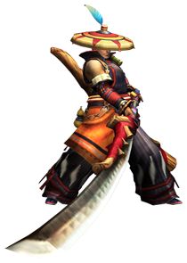
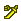
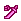
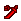
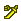
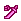
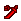

太刀
出自多玩《怪物獵人P3》數據庫
 武器：太刀 - 大劍 - 片手劍 - 斬擊斧 - 雙刀 - 錘子 - 長槍 - 銃槍 - 狩獵笛 - 弓 - 輕弩 - 重弩
武器：太刀 - 大劍 - 片手劍 - 斬擊斧 - 雙刀 - 錘子 - 長槍 - 銃槍 - 狩獵笛 - 弓 - 輕弩 - 重弩
|  |
|
註：
1，武器名稱前的小圖示    分別代表稀有度1-7
   分別代表稀有度1-7
2，點選武器名稱可以檢視其詳細資料（全武器完工）
3，等級標註為「上位*」的武器雖然等級是上位，但是因為靈鶴石在下位農場就能採集到，所以下位也可以製作
武器派生
古結云派生系
| 武器 | 稀有度 | 攻擊 | 附加效果 | 斬味 | 孔 | 等級 |
| ■古結云派生 | ||||||
| 古結云太刀
| 1 | 50 | - | - - - | 下位 | |
| ┗ 結云太刀
| 1 | 70 | - | - - - | 下位 | |
| ┣ 結云太刀改
| 1 | 90 | - | - - - | 下位 | |
| ┃ ┣ 結云大太刀 | 2 | 130 | - | - - - | 下位 | |
| ┃ ┗ 鮮血十字刃 | 2 | 120 | 毒30 | - - - | 下位 | |
| ┃ ┗ 鮮血十字刃改 | 3 | 150 | 毒35 | - - - | 下位 | |
| ┃ ┣ 毒刀甘毒十字 | 6 | 170 | 毒40 | - - - | 上位 | |
| ┃ ┗ 深紅十字刃 | 5 | 170 | 會心率 10% 雷26 | - - - | 上位 | |
| ┃ ┗ 失落伊甸 | 6 | 190 | 會心率 15% 雷30 | - - - | 上位 | |
| ┣ 鐵刀
| 1 | 80 | - | - - - | 下位 | |
| ┃ ┣ 鐵刀【禊】
| 1 | 100 | - | - - - | 下位 | |
| ┃ ┃ ┣ 鐵刀【神樂】 | 2 | 140 | - | - - - | 下位 | |
| ┃ ┃ ┃ ┣ 迅影軍刀 | 3 | 140 | 會心率 40% | - - - | 下位 | |
| ┃ ┃ ┃ ┃ ┗ 迅影軍刀改 | 4 | 160 | 會心率 40% | O - - | 上位* | |
| ┃ ┃ ┃ ┃ ┣ 夜刀【月影】 | 6 | 180 | 會心率 40% | O O - | 上位 | |
| ┃ ┃ ┃ ┃ ┗ 夢魘軍刀 | 5 | 180 | - | O - - | 上位 | |
| ┃ ┃ ┃ ┃ ┗ 疾風刀【里月影】 | 6 | 200 | - | O - - | 上位 | |
| ┃ ┃ ┃ ┗ 一虎刀 | 3 | 170 | 會心率 -20% | - - - | 下位 | |
| ┃ ┃ ┃ ┗ 一虎刀【餓刃】 | 4 | 190 | 會心率 -20% | - - - | 上位 | |
| ┃ ┃ ┃ ┗ 轟刀【餓虎】 | 6 | 220 | 會心率 -20% | - - - | 上位 | |
| ┃ ┃ ┗ 電鋸 | 2 | 120 | 雷10 | O - - | 下位 | |
| ┃ ┃ ┗ 電鋸改 | 3 | 170 | 雷12 | O - - | 下位 | |
| ┃ ┃ ┗ 改良電鋸 | 4 | 200 | 雷14 | O - - | 上位 | |
| ┃ ┗ 凍刃 | 2 | 120 | 冰15 | - - - | 下位 | |
| ┃ ┗ 凍刃【冰華】 | 3 | 150 | 冰22 | - - - | 下位 | |
| ┃ ┗ 六花垂冰丸 | 5 | 200 | 冰30 | - - - | 上位 | |
| ┣ 青熊薙
| 1 | 110 | - | - - - | 下位 | |
| ┃ ┣ 青熊薙改 | 2 | 150 | - | - - - | 下位 | |
| ┃ ┃ ┣ 青熊長筆【留跳】 | 4 | 200 | - | - - - | 上位 | |
| ┃ ┃ ┣ 斷牙太刀 | 3 | 160 | 防禦力+8 龍10 | O - - | 下位 | |
| ┃ ┃ ┃ ┗ 斷牙刀【一太刀】 | 7 | 210 | 防禦力+16 龍15 | O O - | 上位 | |
| ┃ ┃ ┗ 山刈鐮 | 3 | 180 | - | - - - | 下位 | |
| ┃ ┃ ┗ 山刈大鐮 | 5 | 200 | - | O - - | 上位 | |
| ┃ ┃ ┗ 山薙巨槌刀 | 6 | 220 | - | O - - | 上位 | |
| ┃ ┗ 水溺刀 | 2 | 130 | 防禦力+8 水14 | O - - | 下位 | |
| ┃ ┗ 水溺刀改 | 3 | 170 | 防禦力+10 水16 | O O - | 下位 | |
| ┃ ┣ 巨蛇禪杖 | 5 | 190 | 防禦力+12 水27 | O O - | 上位 | |
| ┃ ┗ 毒蛇禪杖 | 5 | 190 | 毒18 | O - - | 上位 | |
| ┃ ┗ 碎流毒液禪杖 | 6 | 210 | 毒25 | O - - | 上位 | |
| ┗ 骨刀【犬牙】
| 1 | 90 | - | - - - | 下位 | |
| ┣ 骨刀【豺牙】 | 2 | 120 | - | - - - | 下位 | |
| ┃ ┣ 骨刀無限 | 2 | 110 | 麻痺15 | - - - | 下位 | |
| ┃ ┃ ┣ 骨刀無限改 | 3 | 130 | 麻痺21 | - - - | 下位 | |
| ┃ ┃ ┃ ┣ 骨縛刀【影縫】 | 4 | 150 | 麻痺28 | O - - | 上位 | |
| ┃ ┃ ┃ ┗ 骨刀極限 | 4 | 190 | - | O O - | 上位 | |
| ┃ ┃ ┃ ┗ 骨斷刀【影鼬】 | 5 | 210 | - | O O - | 上位 | |
| ┃ ┃ ┗ 炎舞者 | 3 | 140 | 會心率 15% 火25 | - - - | 下位 | |
| ┃ ┃ ┗ 地獄炎舞者 | 6 | 180 | 會心率 25% 火35 | - - - | 上位 | |
| ┃ ┣ 飛龍刀【雙火】 | 3 | 160 | 火18 | O - - | 下位 | |
| ┃ ┃ ┗ 飛龍刀【雙炎】 | 5 | 170 | 火22 | O - - | 上位 | |
| ┃ ┃ ┗ 飛龍刀【雙紅蓮】 | 6 | 190 | 火24 | O - - | 上位 | |
| ┃ ┃ ┗ 飛龍刀【銀】 | 7 | 210 | 火26 | O O - | 上位 | |
| ┃ ┗ 爆錘刀 | 3 | 170 | 防禦力+20 | - - - | 下位 | |
| ┃ ┗ 爆錘刀改 | 4 | 200 | 防禦力+30 | - - - | 上位 | |
| ┃ ┣ 紅蓮鋼錘刀 | 6 | 230 | 防禦力+40 | - - - | 上位 | |
| ┃ ┗ 鉻合金刀 | 5 | 210 | 防禦力+20 會心率 -20% | - - - | 上位 | |
| ┃ ┗ 鉻合金名刀 | 6 | 240 | 防禦力+20 會心率 -30% | - - - | 上位 | |
| ┗ 毒狗太刀
| 1 | 100 | 毒18 | O O - | 下位 | |
| ┗ 毒狗太刀改 | 2 | 130 | 毒20 | O O - | 下位 | |
| ┗ 猛毒太刀 | 4 | 180 | 毒24 | O O - | 上位 |
南蠻刀派生系
| 武器 | 稀有度 | 攻擊 | 附加效果 | 斬味 | 孔 | 等級 |
| ■南蠻刀派生 | ||||||
| 南蠻刀 | 3 | 160 | 會心率 10% 水18 | - - - | 下位 | |
| ┗ 南蠻刀改 | 4 | 180 | 會心率 15% 水21 | O - - | 上位 | |
| ┗ 南蠻太刀【鮫斬】 | 6 | 200 | 會心率 20% 水25 | O - - | 上位 |
恐暴派生系
| 武器 | 稀有度 | 攻擊 | 附加效果 | 斬味 | 孔 | 等級 |
| ■恐暴派生 | ||||||
| 恐暴懲罰牙 | 5 | 180 | 會心率 10% 龍18 | O - - | 上位 | |
| ┗ 災厄絞殺牙 | 7 | 200 | 會心率 10% 龍23 | O - - | 上位 |
疾風殘噬者派生系
| 武器 | 稀有度 | 攻擊 | 附加效果 | 斬味 | 孔 | 等級 |
| ■疾風殘噬者派生 | ||||||
| 疾風殘噬者 | 2 | 130 | - | O - - | 下位 | |
| ┗ 絕音吞噬者 | 3 | 140 | - | O O - | 下位 | |
| ┗ 風語者 | 6 | 190 | 會心率 15% | O O O | 上位 |
太刀魚刃派生系
| 武器 | 稀有度 | 攻擊 | 附加效果 | 斬味 | 孔 | 等級 |
| ■太刀魚刃派生 | ||||||
| 太刀魚刃 | 2 | 70 | 水22 | - - - | 下位 | |
| ┗ 太刀魚刃改 | 3 | 110 | 水30 | - - - | 下位 | |
| ┗ 鮮魚帶刀 | 5 | 160 | 水40 | - - - | 上位 |
真結云派生系
| 武器 | 稀有度 | 攻擊 | 附加效果 | 斬味 | 孔 | 等級 |
| ■真結云太刀派生 | ||||||
| 真結云太刀 | 3 | 160 | - | - - - | 下位 | |
| ┗ 真結云太刀改 | 4 | 190 | - | - - - | 上位 | |
| ┗ 靈刀結云·真打 | 6 | 210 | - | - - - | 上位 |
王刀派生系
| 武器 | 稀有度 | 攻擊 | 附加效果 | 斬味 | 孔 | 等級 |
| ■王刀派生 | ||||||
| 王刀雷切 | 3 | 160 | 雷20 | O - - | 下位 | |
| ┗ 王牙刀【伏雷】 | 6 | 210 | 雷24 | O - - | 上位 |
兇刀派生系
| 武器 | 稀有度 | 攻擊 | 附加效果 | 斬味 | 孔 | 等級 |
| ■兇刀派生 | ||||||
| 兇刀【催花雨】 | 7 | 240 | 會心率 -20% 水12 | - - - | 上位 |
霸刀派生系
| 武器 | 稀有度 | 攻擊 | 附加效果 | 斬味 | 孔 | 等級 |
| ■霸刀派生 | ||||||
| 霸刀·末日隕落 | 7 | 250 | 會心率 30% | - - - | 上位 |
崩刀派生系
| 武器 | 稀有度 | 攻擊 | 附加效果 | 斬味 | 孔 | 等級 |
| ■崩刀派生 | ||||||
| 崩刀·斬空滄影 | 7 | 250 | 防禦力+15 會心率 -20% 冰14 | - - - | 上位 |
漆黑之爪派生系
| 武器 | 稀有度 | 攻擊 | 附加效果 | 斬味 | 孔 | 等級 |
| ■漆黑之爪派生 | ||||||
| 漆黑之爪 | 6 | 170 | 龍28 | O - - | 上位 | |
| ┗ 漆黑爪【終焉】 | 7 | 190 | 龍34 | O O - | 上位 |
鐵碎牙派生系
| 武器 | 稀有度 | 攻擊 | 附加效果 | 斬味 | 孔 | 等級 |
| ■鐵碎牙派生 | ||||||
| 鐵碎牙 | 3 | 150 | - | O O O | 配信 | |
| ┗ 鐵碎牙D | 6 | 200 | - | O O O | 配信 |
琥珀萬雷派生系
| 武器 | 稀有度 | 攻擊 | 附加效果 | 斬味 | 孔 | 等級 |
| ■琥珀萬雷派生 | ||||||
| 琥珀萬雷 | 6 | 190 | 雷35 | O O - | 配信 |
霸王劍派生系
| 武器 | 稀有度 | 攻擊 | 附加效果 | 斬味 | 孔 | 等級 |
| ■霸王劍派生 | ||||||
| 霸王劍 | 6 | 160 | 龍40 | - - - | 配信 |
太刀攻略心得
圖文
| · 【獵人講武堂】太刀篇Vol.1 認識太刀 | 2010.12.08 |
| · 【獵人講武堂】太刀篇Vol.2 太刀與全武器比較分析(上) | 2010.12.16 |
| · 【獵人講武堂】太刀篇Vol.3 太刀與全武器比較分析(下) | 2010.12.22 |
| · 單人無道具太刀破煌黑角的小心得 | 2010.12.26 |
| · 新手寫給新手的心得 太刀炎戈龍全破視訊 | 2010.12.30 |
| · | >>更多 |
視訊
| · 【視訊】貓火太刀恐暴龍6分54秒 | 2010.12.20 |
| · 【視訊】對空無壓力 太刀空砍上位雄火5分14秒 | 2010.12.21 |
| · | >>更多 |
武器：太刀 - 大劍 - 片手劍 - 斬擊斧 - 雙刀 - 錘子 - 長槍 - 銃槍 - 狩獵笛 - 弓 - 輕弩 - 重弩